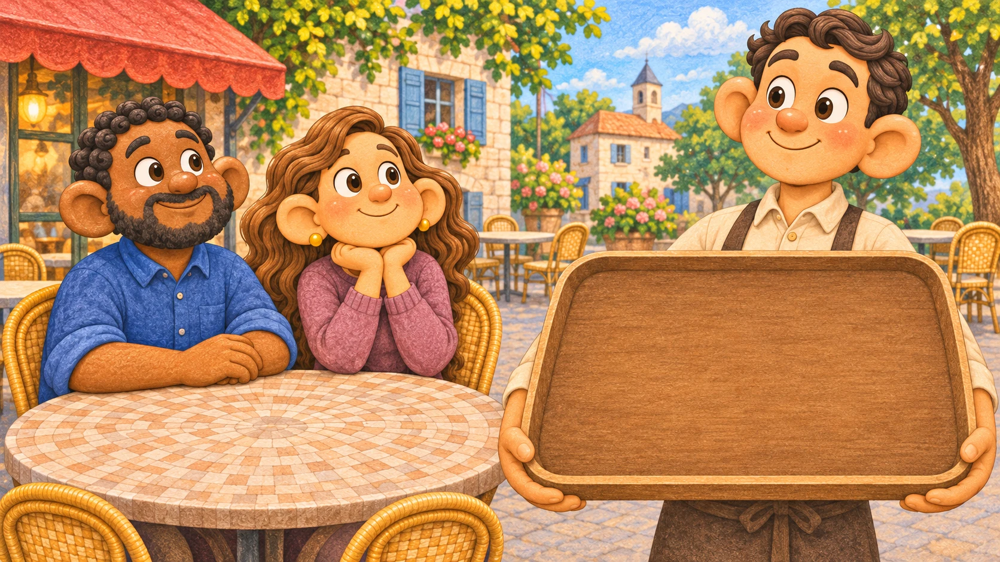

← Mes jeux
Au café — les boissons
Niveau 3
J’écoute · Je lis · Je choisis
Une pause au café
Découvre les boissons et sers les deux parents.

🔊
1 · Je découvre les boissons
Deux séries de quatre mots à associer
☕
2 · Je sers les parents
Cinq tournées, une boisson pour chacun
← Revoir le marché
Niveau 4 · À la cantine →
← Les deux petits jeux
Le papa
🔊
La maman
🔊
Le serveur
🔊
Bonjour, que voulez-vous boire ?
Retirer cette boisson
Vérifier les deux boissons
Continuer →